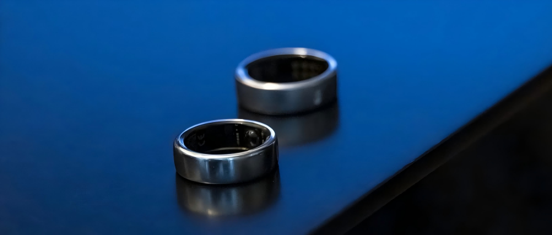
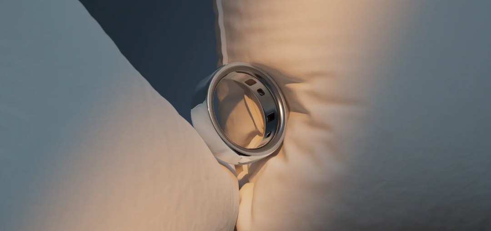
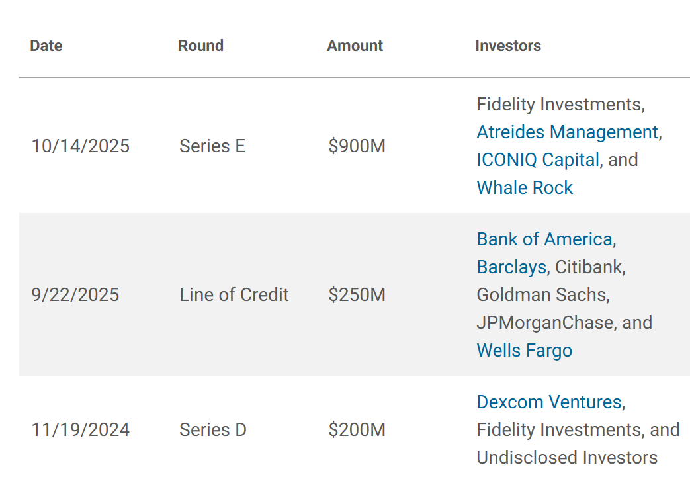
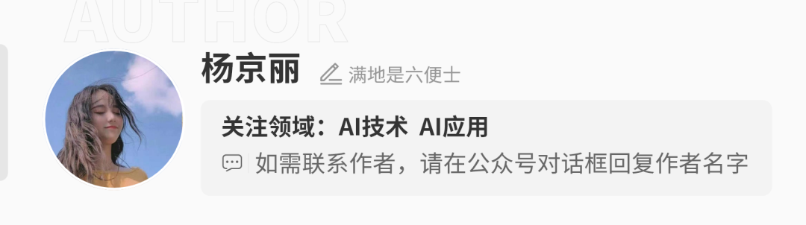
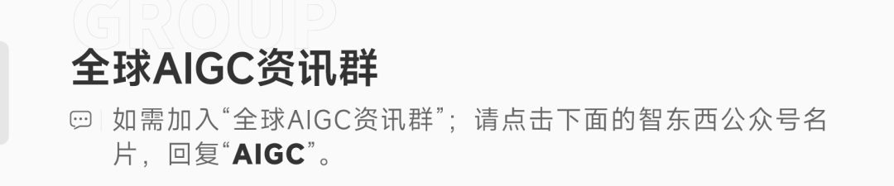

📈 估值748亿！做智能戒指的公司要IPO了
Oura Smart Ring Files for IPO at Billion Valuation

智东西5月22日消息，据《华尔街日报》报道，智能戒指制造商manufacturer[ˌmænjuˈfæktʃərər] n. 制造商Oura已向美国证券交易委员会秘密提交首次公开募股（IPO）申请。
Oura智能戒指可追踪track[træk] v. 追踪；跟踪心率、皮肤温度等指标，主要用于帮助用户改善睡眠、减轻压力。该产品曾获得美国演员、Goop创始人格温妮丝·帕特洛（Gwyneth Paltrow）和Meta创始人、CEO马克·扎克伯格（Mark Zuckerberg）等多位名人的称赞praise[preɪz] n. 称赞；赞扬。
2013年，Oura在芬兰创立，目前总部headquarters[ˈhedˌkwɔrtərz] n. 总部位于旧金山。创始成员包括彼得里·拉赫特拉（Petteri Lahtela）、卡里·基韦莱（Kari Kivelä）和马尔库·科斯克拉（Markku Koskela），三人此前积累accumulate[əˈkjuːmjuleɪt] v. 积累了产品、工程和研发等经验，经历涉及Polar、诺基亚等公司。
从产品迭代iteration[ˌɪtəˈreɪʃən] n. 迭代来看，Oura2015年推出第一代Oura Ring，2017年发布Oura Ring Gen2。2021年10月，Oura推出Oura Ring Gen3，加入女性健康周期预测、自动活动检测detection[dɪˈtekʃən] n. 检测；探测、日间心率等功能。2024年10月，Oura发布Oura Ring 4，采用Smart Sensing传感技术，同步升级日间压力、自动活动检测、周期洞察insight[ˈɪnsaɪt] n. 洞察力；深刻见解等功能及App体验。

近年来，Oura持续强化strengthen[ˈstreŋθən] v. 加强；强化软件和AI健康能力。2024年12月，Oura面向Gen3和Ring 4用户正式推出Symptom Radar功能，用于识别identify[aɪˈdentɪfaɪ] v. 识别；辨认身体压力和潜在不适的早期信号；2025年3月，Oura面向用户推出launch[lɔːntʃ] v. 推出；发布AI健康教练Oura Advisor；同年5月，Oura上线Oura Meals功能，用户拍摄capture[ˈkæptʃər] v. 拍摄；捕捉餐食照片后，可由AI健康教练分析食物营养价值。
Oura目前已完成十余轮融资funding[ˈfʌndɪŋ] n. 融资；资金。截至2025年10月，公司累计融资约15亿美元（约合人民币102亿元），估值valuation[ˌvæljuˈeɪʃən] n. 估值；估价约为110亿美元（约合人民币748亿元）。2024年，血糖监测设备公司Dexcom宣布与Oura建立合作partnership[ˈpɑːrtnərʃɪp] n. 合作；合伙关系关系，双方将聚焦代谢健康领域，Dexcom还称将投资7500万美元（约合人民币5.1亿元）。
2024年12月，Oura完成complete[kəmˈpliːt] v. 完成2亿美元（约合人民币13.6亿元）D轮融资，估值达到52亿美元（约合人民币353.6亿元）；2025年10月，Oura完成超过9亿美元（约合人民币61.2亿元）E轮融资，由Fidelity Management & Research领投lead[liːd] v. 领投；主导，Iconiq、Whale Rock和Atreides等参投。

今年5月，Oura称，公司本季度付费会员subscriber[səbˈskraɪbər] n. 订阅者；会员数有望突破500万。据Oura去年9月公告，自2015年首次推出产品以来，Oura Ring累计销量已超过550万枚，公司2024年营收revenue[ˈrevənjuː] n. 营收；收入超过5亿美元（约合人民币34亿元），2025年营收有望超过10亿美元（约合人民币68亿元）。
市场份额方面，Omdia数据显示，全球智能戒指出货量shipment[ˈʃɪpmənt] n. 出货量；装运2023年超过85万枚，2024年增长至180万枚，2025年上半年达到160万枚，全年预计超过400万枚。按2025年上半年出货量口径，Oura以74%的份额share[ʃer] n. 份额；股份位居全球智能戒指市场第一。
Oura并未公布announce[əˈnaʊns] v. 公布；宣布更多IPO细节。该公司计划后续公开提交文件，届时将披露财务业绩、承销商underwriter[ˈʌndərˌraɪtər] n. 承销商、募资用途等具体信息。
Oura此次秘密提交IPO申请，发行规模、价格区间、财务数据、承销商名单等关键信息仍未披露disclose[dɪsˈkloʊz] v. 披露；公开。若IPO顺利推进，Oura有望成为以智能戒指为核心业务的公司中首个IPO案例case[keɪs] n. 案例；实例。
近期美国多家科技公司都在筹备prepare[prɪˈper] v. 筹备；准备上市，SpaceX昨天已公开递交IPO文件，成为史上最大IPO，OpenAI被曝可能明天秘密递表，Anthropic此前也被曝在筹备IPO。相比这些AI和太空科技巨头，Oura则聚焦focus[ˈfoʊkəs] v. 聚焦；集中智能戒指领域，它后续能否获得公开市场认可，将成为外界观察智能戒指这一新品类商业化成熟度的重要因素。




